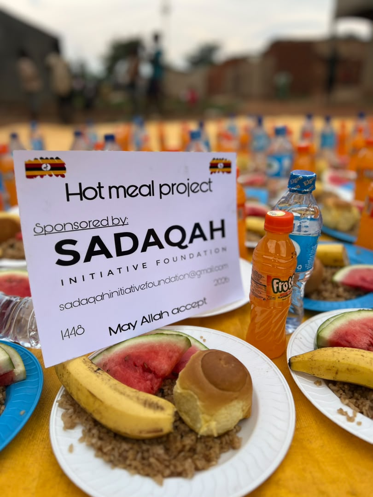
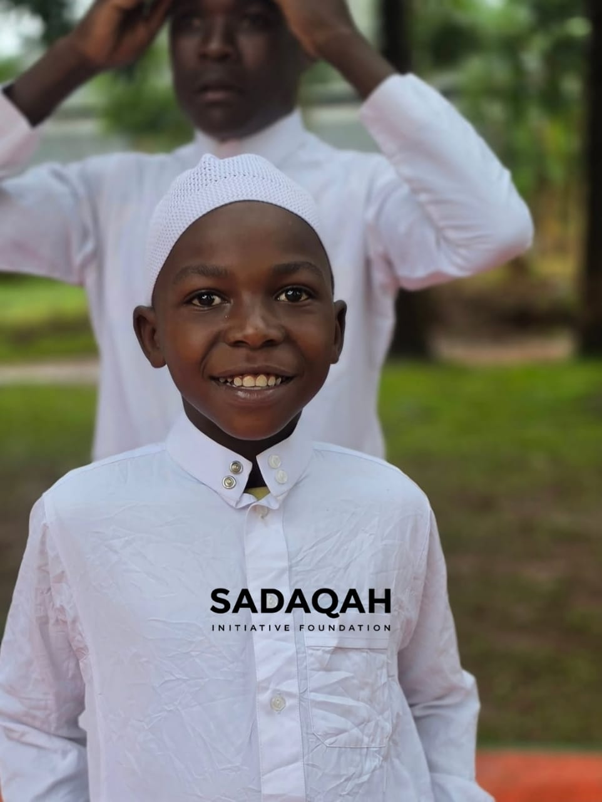

OUR PURPOSE
A call to respond
SADAQAH begins with a simple belief: every person deserves safety, care and the chance to rebuild. Its work is inspired by faith and driven by humanity.
OUR STORY
A story of compassion expressed through practical support, community care and dignity-first action.
THE JOURNEY
Rooted in Islamic values, SADAQAH brings people together to meet immediate needs while helping families move forward.
OUR PURPOSE
SADAQAH begins with a simple belief: every person deserves safety, care and the chance to rebuild. Its work is inspired by faith and driven by humanity.

FIELD RELIEF
Field teams respond directly to hardship with food, water and essential relief. Each distribution is guided by dignity, respect and a commitment to meet people where they are.

EVERYDAY HOPE
Hot meals become moments of connection and hope. The work is practical, immediate and personal: a meal can ease a difficult day and remind someone that they are not forgotten.

COLLECTIVE GIVING
A campaign gives a community a shared purpose. Donations, sponsorships and word-of-mouth support help fund emergency relief and turn individual generosity into collective action.

THE WAY FORWARD
The story continues through every family reached, every volunteer who serves and every supporter who chooses to give. Together, compassion becomes lasting, community-led relief.
BE PART OF THE NEXT CHAPTER